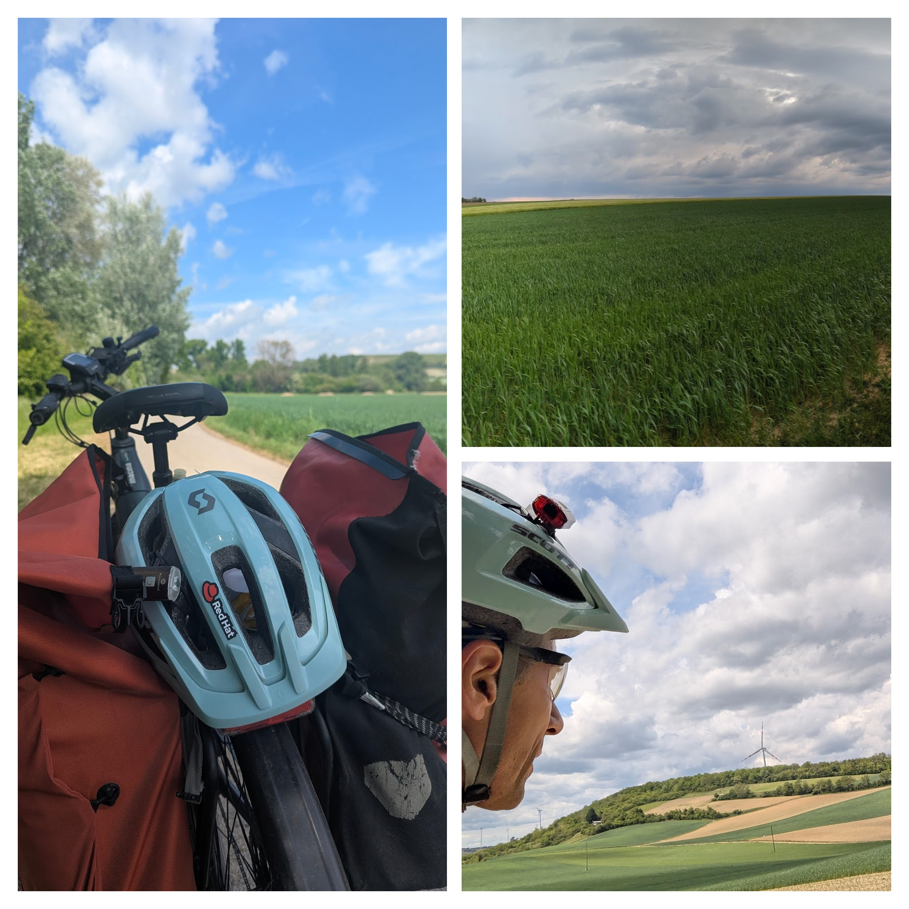

Two Wheels, One EV9: Cycling Vienna to Brno for Red Hat's NHCE
Posted on Thu 14 May 2026 in posts
TL;DR
If you enjoy cycling and find yourself heading to Red Hat's Brno office — take the EuroVelo9 route from Vienna. Two days of ~150km of picturesque scenes, nearly all paved. You will not regret it.
Background: How Did I End Up Here?
When I realized the closest major airport to Brno was actually Vienna, I saw an opportunity to follow my passion for outdoor activities. Why take a train when I could cycle? Apparently I'm not the first person with this instinct: the EU has formalized exactly this route as EV9, a cross-continental North-South cycling network connecting among others the two cities.
Preparation
The route is approximately 150 KM. To keep it enjoyable, I split the trip into two days, choosing the charming town of Mikulov as my midpoint.
The Bike: I rented a bicycle from a local shop that offered hotel drop-off/pick-up. This was important in my case since I needed to head to the airport before I could return the bike myself. I wasn’t sure how demanding the ride would feel with luggage and my lack of recent riding experience, so I rented an e-bike (to give me some insurance and peace of mind). In practice, I didn't use the motor on the second day, and only relied on it toward the end of the first, however this made me realize how accessible the route can be to non-hardcore athletes.
Navigation: I highly recommend downloading the GPX route onto a mobile app - I used OpenStreetMap (OSM) with downloaded maps for the region. Signposting can be a bit tricky when exiting Vienna, and OSM kept me on track.
Day 1: Vienna to Mikulov

I set off around 11:00 AM after hiring the bicycle and a quick tour of Vienna (to verify that the bicycle is comfortable). Navigating out of the city was the most complex part of the first day, but once I hit the trail, it was smooth sailing.
More than 95% of the route is paved with asphalt, so almost any touring bike would work well. The route largely takes care of itself through villages, vineyards, and open Moravian farmland. I took the liberty to move away from the EV9 route (around Mistelbach) - to save some 20KM allowing me some ease of mind and relaxation for my legs. I used the E-bike's motor only toward the end of the day when I wanted to save some energy for the following day.
The stop over at Mikulov (Arriving around 17:00) turned out to be a great decision. The local winery with comfortable guest rooms made for an ideal overnight stop.
Day 2: Mikulov to Brno
Refreshed and ready, I hit the road by 08:00, and had a short tour of Mikulov - which surprisingly has a historical castle and an old synagogue. Getting back onto the route felt effortless, and after an hour I arrived at the lake Vodní Nádrž Nové Mlýny - unfortunately the weather was not warm enough for a quick dip. Despite some headwinds, colder temperatures, and a few construction detours (thanks again, OSM!), I made great time. Starting early allowed me to reach the Red Hat Brno office with enough time to get a couple of working hours in and meet some colleagues.
Day 3: The NHCE
Brno is a fantastic, bike-friendly city. Exploring the local scene and the Red Hat office was another enjoyable part of the trip. I eventually took the train back to Vienna with the bicycle — a surprisingly simple and rewarding way to close the trip.
Summary
The NHCE itself was a great experience, meeting other Red-Hatters was fun and opening, but the cycling journey added something extra. It gave me space to reflect on my career journey while immersed in nature and beautiful landscape. Somewhere along the ride, I even started thinking about the parallels between e-biking and agentic engineering — but that belongs in a different blog post.
P.S.
- I was lucky with the weather - it wouldn't be as enjoyable if I needed to fight through some bad weather.
- Remember to download offline maps and the EV9 GPX route.
- It is a bike ride (not a city tour) - remember to pack padded leggings, gloves and glasses etc.